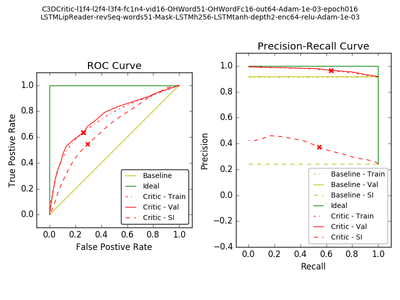

Critic - taking only video input and a predicted word
Training with top-3 predicted words from best lip reader
Accuracies: Train - 64.4%, Val - 64.5%, SI - 66.7%
ROC curve and Precision-Recall curve:

Figure 1: ROC curve and precision-recall curve for one set of weights of critic (at epoch number 16). The 'X' marks are at the values for threshold=0.5.
Figure 2: Accuracy of Critic with different values of threshold over the critic's scores.
Baseline Accuracy vs Threshold from softmax scores of LR
Only use critic in a region - when LR is dicey. If LR is very sure, ignore critic.
Additional information to Critic - fraction of scaling up or down the mouth image
Use case: self-learning?
Use LR x Critic on very few data
Train fusion